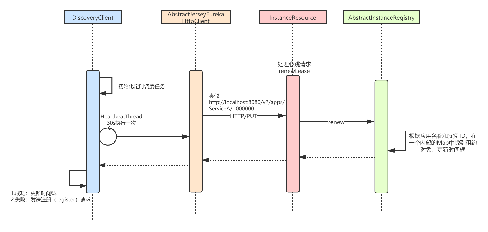

本章，我将讲解Eureka的心跳（renew）机制。通过前面章节，我们已经知道 Eureka-Client 向 Eureka-Server 注册应用实例成功后，会获得租约 ( Lease )。所以，Eureka-Client 向 Eureka-Server 发送心跳，其实就是进行续租(Lease Renewal)，避免租约过期，这样才能让Eureka-Server知道自己还活着。
默认情况下，租约有效期为 90 秒，心跳（续租）频率为 30 秒。两者比例为 1 : 3 ，也就是说，在网络异常等情况下，有三次重试机会。

Eureka-Client发起心跳（续租）的整体流程如下：
EurekaHttpClient#sendHeartbeat()；Eureka-Client 在构造和初始化时，会创建一个心跳（续租）线程——HeartbeatThread，每隔一段时间发送一次心跳：
/**
* DiscoveryClient.java
*/
DiscoveryClient(ApplicationInfoManager applicationInfoManager, EurekaClientConfig config, AbstractDiscoveryClientOptionalArgs args,
Provider<BackupRegistry> backupRegistryProvider) {
// ...
// 定时任务线程池，用于定时触发心跳( 续租 )
scheduler = Executors.newScheduledThreadPool(2,
new ThreadFactoryBuilder()
.setNameFormat("DiscoveryClient-%d")
.setDaemon(true)
.build());
// 心跳任务执行线程池
heartbeatExecutor = new ThreadPoolExecutor(
1, clientConfig.getHeartbeatExecutorThreadPoolSize(), 0, TimeUnit.SECONDS,
new SynchronousQueue<Runnable>(),
new ThreadFactoryBuilder()
.setNameFormat("DiscoveryClient-HeartbeatExecutor-%d")
.setDaemon(true)
.build()
);
// ...
// 初始化定时任务
initScheduledTasks();
}
initScheduledTasks，会开始进行心跳任务的调度，默认每隔30秒调度一次：
private void initScheduledTasks() {
// 向 Eureka-Server 发送心跳（续租）执行器
if (clientConfig.shouldRegisterWithEureka()) {
// 心跳间隔，默认30s
int renewalIntervalInSecs = instanceInfo.getLeaseInfo().getRenewalIntervalInSecs();
// 超时重试因子
int expBackOffBound = clientConfig.getHeartbeatExecutorExponentialBackOffBound();
logger.info("Starting heartbeat executor: " + "renew interval is: " + renewalIntervalInSecs);
// 开始调度
scheduler.schedule(
new TimedSupervisorTask(
"heartbeat",
scheduler,
heartbeatExecutor,
renewalIntervalInSecs,
TimeUnit.SECONDS,
expBackOffBound,
new HeartbeatThread() // HeartbeatThread线程
),
renewalIntervalInSecs, TimeUnit.SECONDS);
//...
} else {
logger.info("Not registering with Eureka server per configuration");
}
}
上述com.netflix.discovery.DiscoveryClient.HeartbeatThread，是一个包含心跳请求逻辑的Runnable任务，实现执行 Eureka-Client 向 Eureka-Server 发起续租( renew )请求。实现代码如下：
/**
* DiscoveryClient.java
*/
// 最后成功向 Eureka-Server 心跳时间戳
private volatile long lastSuccessfulHeartbeatTimestamp = -1;
private class HeartbeatThread implements Runnable {
public void run() {
if (renew()) {
// 心跳发送成功后，更新时间戳
lastSuccessfulHeartbeatTimestamp = System.currentTimeMillis();
}
}
}
调用 #renew 方法，执行续租逻辑：
boolean renew() {
EurekaHttpResponse<InstanceInfo> httpResponse;
try {
// 1.利用EurekaTransport通信组件发送HTTP/PUT请求
httpResponse = eurekaTransport.registrationClient.sendHeartBeat(instanceInfo.getAppName(), instanceInfo.getId(), instanceInfo, null);
logger.debug("{} - Heartbeat status: {}", PREFIX + appPathIdentifier, httpResponse.getStatusCode());
// 2.404表示 Eureka-Server 不存在租约，则重新发起注册
if (httpResponse.getStatusCode() == 404) {
REREGISTER_COUNTER.increment();
logger.info("{} - Re-registering apps/{}", PREFIX + appPathIdentifier, instanceInfo.getAppName());
long timestamp = instanceInfo.setIsDirtyWithTime();
// 新发起注册
boolean success = register();
if (success) {
instanceInfo.unsetIsDirty(timestamp);
}
return success;
}
return httpResponse.getStatusCode() == 200;
} catch (Throwable e) {
logger.error("{} - was unable to send heartbeat!", PREFIX + appPathIdentifier, e);
return false;
}
}
renew方法内部其实调用了 AbstractJerseyEurekaHttpClient#sendHeartBeat(...) 方法，发起续租请求，实现代码如下：
/**
* AbstractJerseyEurekaHttpClient.java
*/
public EurekaHttpResponse<InstanceInfo> sendHeartBeat(String appName, String id, InstanceInfo info, InstanceStatus overriddenStatus) {
// URL，例如http://localhost:8080/v2/apps/ServiceA/i-000000-1
String urlPath = "apps/" + appName + '/' + id;
ClientResponse response = null;
try {
// 发送http/put请求
WebResource webResource = jerseyClient.resource(serviceUrl)
.path(urlPath)
.queryParam("status", info.getStatus().toString())
.queryParam("lastDirtyTimestamp", info.getLastDirtyTimestamp().toString());
if (overriddenStatus != null) {
webResource = webResource.queryParam("overriddenstatus", overriddenStatus.name());
}
Builder requestBuilder = webResource.getRequestBuilder();
addExtraHeaders(requestBuilder);
response = requestBuilder.put(ClientResponse.class); //PUT Request
EurekaHttpResponseBuilder<InstanceInfo> eurekaResponseBuilder = anEurekaHttpResponse(response.getStatus(), InstanceInfo.class).headers(headersOf(response));
if (response.hasEntity()) {
eurekaResponseBuilder.entity(response.getEntity(InstanceInfo.class));
}
return eurekaResponseBuilder.build();
} finally {
if (logger.isDebugEnabled()) {
logger.debug("Jersey HTTP PUT {}/{}; statusCode={}", serviceUrl, urlPath, response == null ? "N/A" : response.getStatus());
}
if (response != null) {
response.close();
}
}
}
Eureka-Server接受心跳（续租）的整体流程如下：
InstanceResource#renewLease()，相当于Jersey的一个MVC框架；com.netflix.eureka.resources.InstanceResource，是处理单个应用实例的请求的 Resource ( Controller )：
/**
* InstanceResource.java
*/
@PUT
public Response renewLease(
@HeaderParam(PeerEurekaNode.HEADER_REPLICATION) String isReplication,
@QueryParam("overriddenstatus") String overriddenStatus,
@QueryParam("status") String status,
@QueryParam("lastDirtyTimestamp") String lastDirtyTimestamp) {
boolean isFromReplicaNode = "true".equals(isReplication);
// 1.执行续租
boolean isSuccess = registry.renew(app.getName(), id, isFromReplicaNode);
// 2.续租失败，返回 404 响应。当 Eureka-Client 收到 404 响应后，会重新发起注册
if (!isSuccess) {
logger.warn("Not Found (Renew): {} - {}", app.getName(), id);
return Response.status(Status.NOT_FOUND).build();
}
// 比较请求的lastDirtyTimestamp和Server端的InstanceInfo的lastDirtyTimestamp的差异
// 需要配置 eureka.syncWhenTimestampDiffers = true ( 默认开启 )。
Response response = null;
if (lastDirtyTimestamp != null && serverConfig.shouldSyncWhenTimestampDiffers()) {
// 比较 lastDirtyTimestamp 的差异
response = this.validateDirtyTimestamp(Long.valueOf(lastDirtyTimestamp), isFromReplicaNode);
// Store the overridden status since the validation found out the node that replicates wins
if (response.getStatus() == Response.Status.NOT_FOUND.getStatusCode()
&& (overriddenStatus != null)
&& !(InstanceStatus.UNKNOWN.name().equals(overriddenStatus))
&& isFromReplicaNode) {
registry.storeOverriddenStatusIfRequired(app.getAppName(), id, InstanceStatus.valueOf(overriddenStatus));
}
} else {
response = Response.ok().build();
}
logger.debug("Found (Renew): {} - {}; reply status={}" + app.getName(), id, response.getStatus());
return response;
}
实际续租逻辑的执行是在Server端的注册表对象的AbstractInstanceRegistry#renew(...) 方法，本质就是根据应用名称和实例ID，在一个内部的Map中找到租约对象，并更新它的时间戳：
/**
* AbstractInstanceRegistry.java
*/
public boolean renew(String appName, String id, boolean isReplication) {
RENEW.increment(isReplication);
// key是实例id，value是Lease对象
Map<String, Lease<InstanceInfo>> gMap = registry.get(appName);
Lease<InstanceInfo> leaseToRenew = null;
if (gMap != null) {
leaseToRenew = gMap.get(id);
}
// 1.如果没找到租约，直接返回失败
if (leaseToRenew == null) {
RENEW_NOT_FOUND.increment(isReplication);
logger.warn("DS: Registry: lease doesn't exist, registering resource: {} - {}", appName, id);
return false;
}
// 2.找到了旧的租约
else {
InstanceInfo instanceInfo = leaseToRenew.getHolder();
if (instanceInfo != null) {
// 获取应用实例的最终状态
InstanceStatus overriddenInstanceStatus = this.getOverriddenInstanceStatus(
instanceInfo, leaseToRenew, isReplication);
// 若应用实例的最终状态为UNKNOWN，则返回失败
if (overriddenInstanceStatus == InstanceStatus.UNKNOWN) {
logger.info("Instance status UNKNOWN possibly due to deleted override for instance {}"
+ "; re-register required", instanceInfo.getId());
RENEW_NOT_FOUND.increment(isReplication);
return false;
}
// 若应用实例的状态与最终状态不相等，则以最终状态覆盖掉应用实例的状态
if (!instanceInfo.getStatus().equals(overriddenInstanceStatus)) {
Object[] args = {
instanceInfo.getStatus().name(),
instanceInfo.getOverriddenStatus().name(),
instanceInfo.getId()
};
logger.info(
"The instance status {} is different from overridden instance status {} for instance {}. "
+ "Hence setting the status to overridden status", args);
instanceInfo.setStatusWithoutDirty(overriddenInstanceStatus);
}
}
// 增加续租计数，Netflix Servo监控用
renewsLastMin.increment();
// 设置 租约最后更新时间戳
leaseToRenew.renew();
return true;
}
}
/**
* Lease.java
*/
public void renew() {
// duration是租约有效期，默认90秒
lastUpdateTimestamp = System.currentTimeMillis() + duration;
}
lastUpdateTimestamp就是最新一次接受到心跳的时间戳，其实这里不需要加这个租约有效期duration，是一个Eureka自身的一个Bug，后面我讲解服务剔除时会讲到。
总结，本章我讲解了Eureka的心跳续租机制，本质就是Eureka-Client通过定时调度任务，每隔一段时间发送一次HTTP/PUT请求到Eureka-Server端。Eureka-Server端接受到请求后，在自己的注册表中找到应用实例对应的租约，然后更新租约的时间戳。